Scenario 1
Kay discovered a new software called 3DLE that could potentially be a great learning tool for her Ancient Greek students at a technology fair she frequents. She decides to use and test the software extensively to see whether it could be of help to her students. She wants to learn the software's in and outs in order to generate class content based on the software.
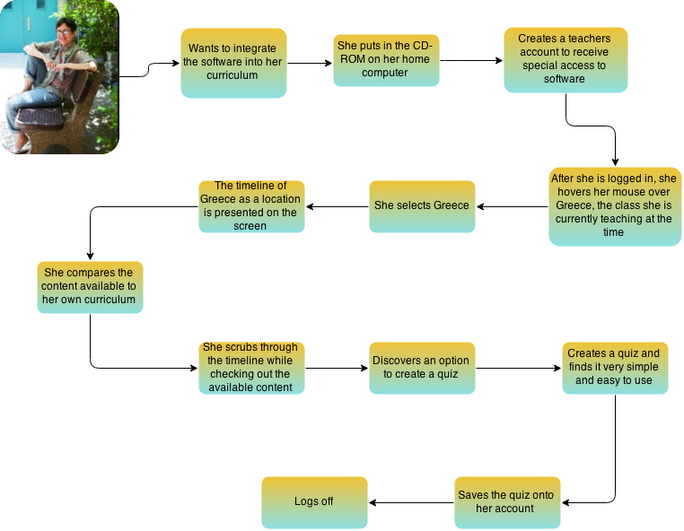
Scenario 2
In Jeffrey's Ancient History class his teacher introduced a new learning
software, 3DLE. She informed them that this will be their new way of
learning and studying outside of the classroom. His teacher understood
that the students were having a difficult time comprehending the textbook,
so she believed this would be a more effective approach. Jeffrey is
hopeful to try a more interactive way of learning his more difficult subject.
When he arrives home after school, his first task is to see what 3DLE is
all about.
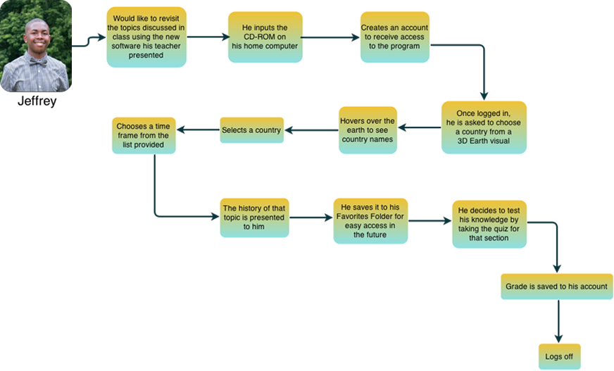
Scenario 3
Troubled with people’s perception of the library as boring and dull, Miranda Tuniz seeks a new resource in refreshing people’s experience in the library. After discovering the new software 3DLE, Miranda has gained new hopes of making the library a more exciting place to learn. With 3DLE, children are more engaged and excited in learning geography and history.
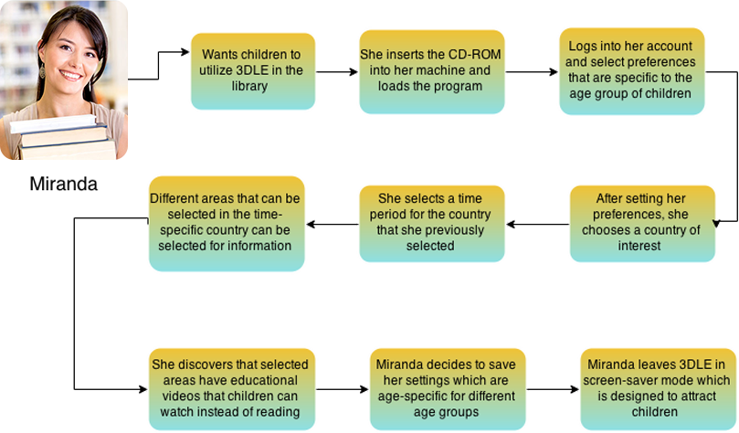
Wireframe
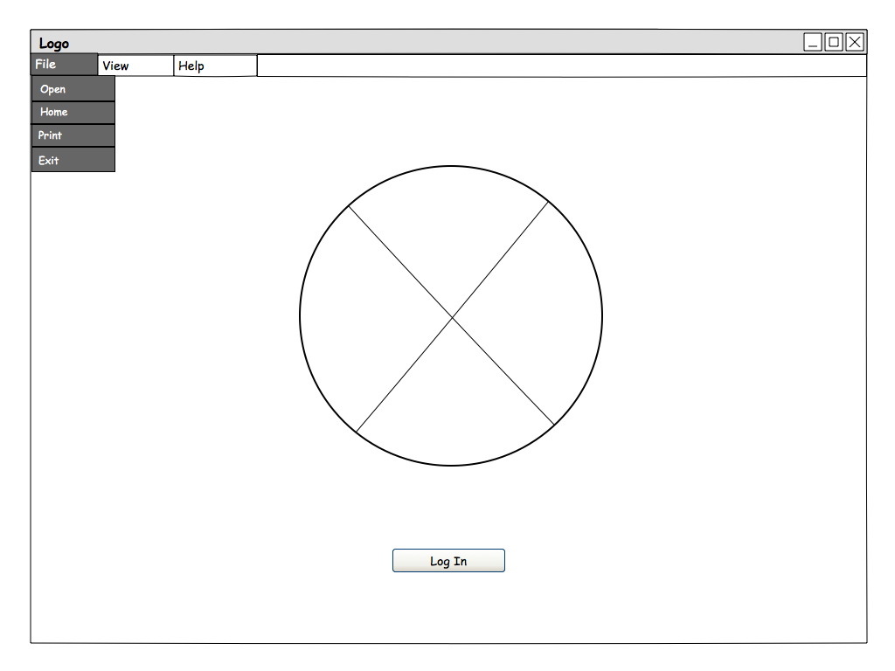
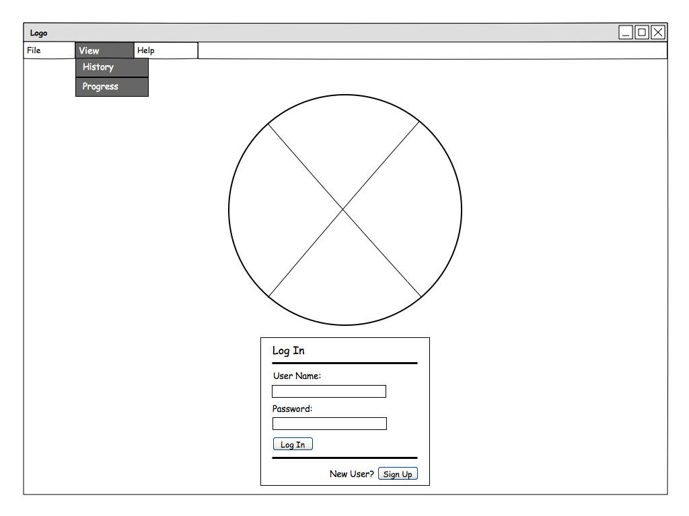
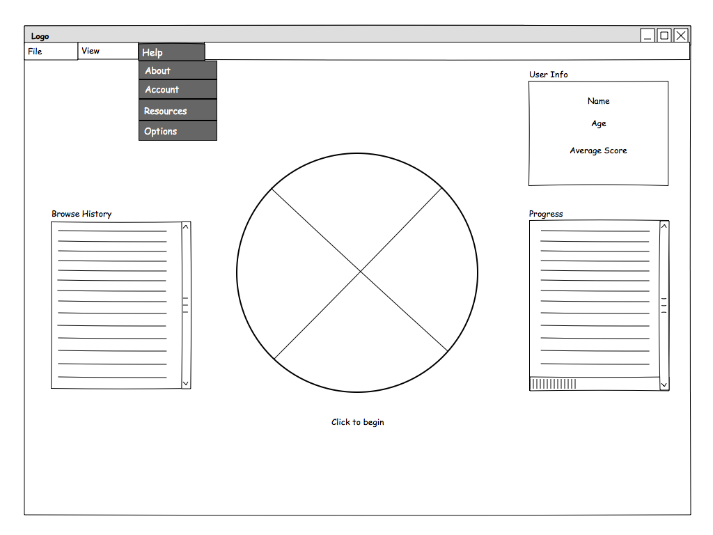
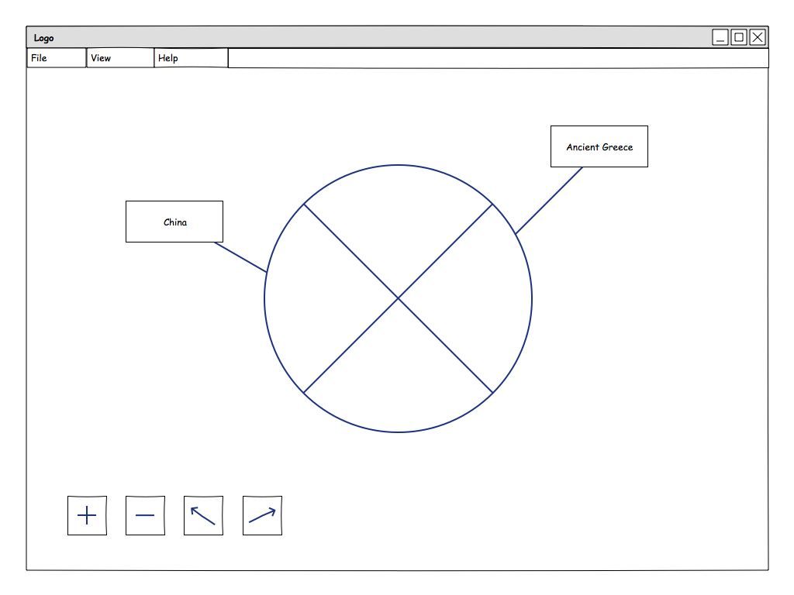
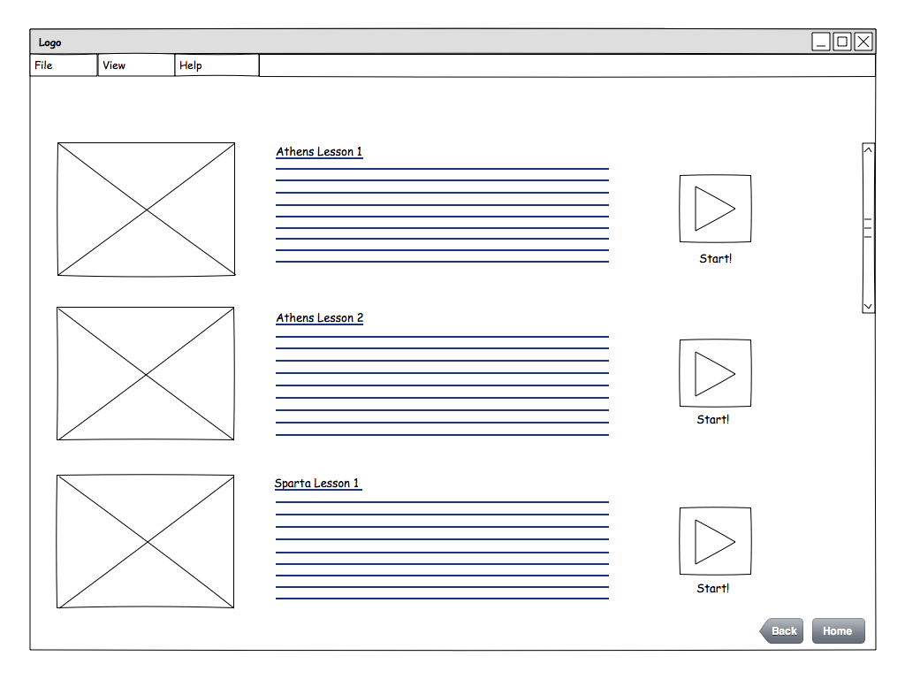
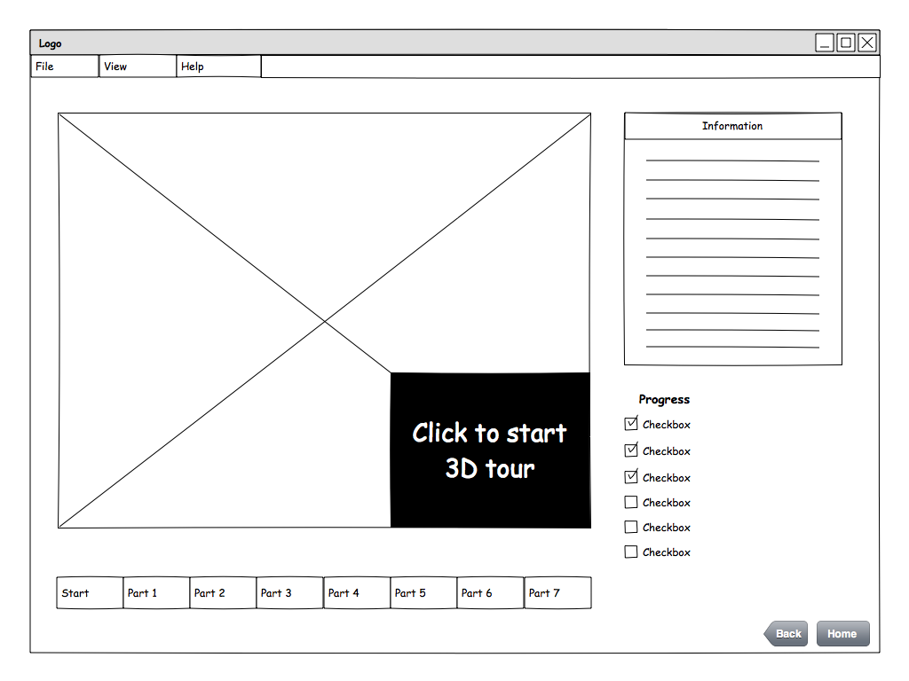
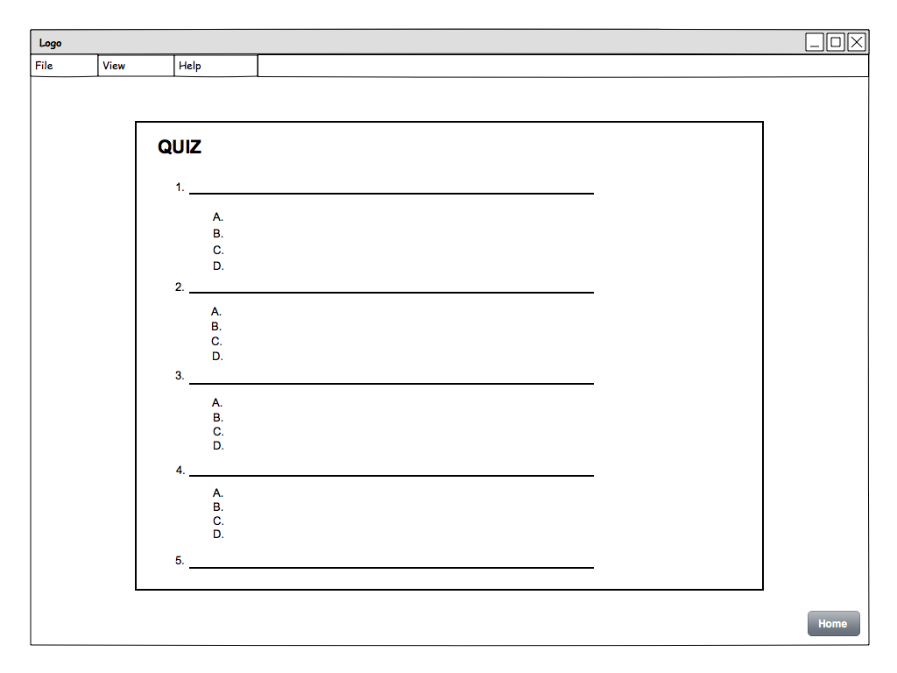
Bibliography
Geography Quiz Game 3D
https://play.google.com/store/apps/details?id=com.Geography.Quiz.Game&hl=en
Geography Quiz Game 3D is an educational mobile application that makes learning geography fun through games. This application is visually appealing and relatively easy to interact with because of its simplicity and multiple choice gameplay.
BBC Primary History - Ancient Greeks
http://www.bbc.co.uk/schools/primaryhistory/ancient_greeks/#
BBC Primary History is a great educational tool for learning ancient history. Offering a wide range of historical subjects, Primary History has an interactable timeline and offers specific subjects such as Home Life, Seas and Ships, and much more where users can select to go more in-depth.
Google Earth
https://www.google.com/earth/
Google Earth is a great tool that displays an interactable 3D Earth that offers many functionalities such as Street View, Navigation, Historical Imagery, and much more. Users can zoom in, rotate, and click on areas of the 3D Earth to get more details and information.
3D History Virtual Tour
http://www.3dhistoryvirtualtour.com
The 3D History Virtual tour offers a panorama where the user can rotate and zoom in and out during the virtual tour. The tour also offers cool soundtracks relative to the specific theme.
NY State Learning Standards
https://www.engageny.org/resource/grade-2-ela-domain-3-the-ancient-greek-civilization
After looking into the history learning standards for grade school students, we decided to base our questions off of the ones provided in this link. These questions are geared towards second graders, however, we plan to increase the difficulty level to make them appropriate for sixth to eighth graders.
Ancient Greece: A Lasting Legacy
http://schools.nyc.gov/documents/teachandlearn/GT/G&T_2008_Greece_Unit_of_Study_FINALweb.pdf
The New York State Learning Standard provides a guideline and sample lesson plans of Ancient Greece for a certain age group. The document offers suggestions for how lessons should be structured and what kind of questions and topics should be focused on.
About Us
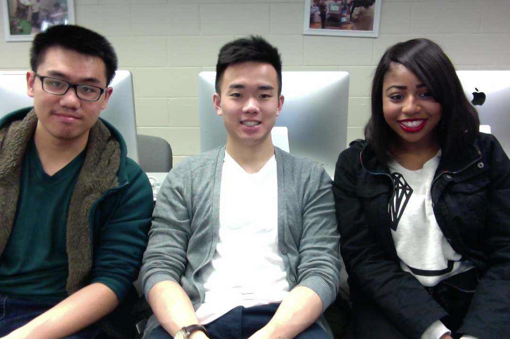
Hello, we are team 3DLE. Starting from left to right, we have Michael Yeung, Sam Hui, and Charmelle Barnaby. We are collaborating on a project for the Human-Computer Interaction course. Our project is called 3DLE, which stands for 3D Learning Environment. We aim to provide a more interactive way of learning history and geopgraphy through 3D models. Our program provides information through tours of 3D models while providing information as the tour progresses. We strive to create a better and more fun alternative to learning history and geography.